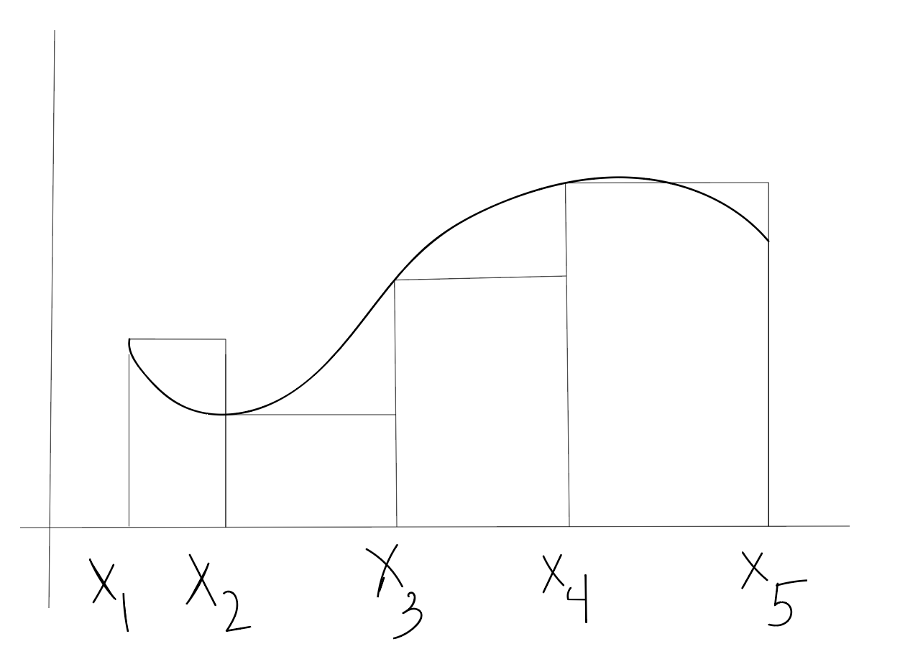

Riemann Sums¶

- The figure above shows the graph of a function \(f\) on the interval \([a,b]\). We want to write an expression for the sum of the areas of the four rectangles that will depend only on the function \(f\) and the interval endpoints \(a\) and \(b\).
- The four subintervals that form the bases of the rectangles along the \(x\)-axis all have the same length; express it in terms of \(a\) and \(b\).
- How many subinterval lengths is \(x_2\) away from \(a = x_0\)?
- Write expressions for \(x_1, x_2, x_3\), and \(x_4\) in terms of \(a\) and \(b\).
- What are the heights of the four rectangles?
- Multiply the heights by the lengths, add the four terms, and call the sum \(R(4)\)
- Generalize your work to obtain an expression for any number of rectangles \(n\) .
- Write your expression using summation notation.
- Consider the function \(f(x) = 3x\) on the interval \([1,5]\). Apply your formula above to find \(R(4)\).
- Sketch a graph of \(f\). Use geometry to find the exact area.
- Consider the function \(f(x) = \frac{1}{\sqrt{x}}\) on the interval \([0.1, 10]\). Plot the function, and use our methods from above to approximate the area under the curve.
- Consider the function \(f(x) = 4-x^2\) on the interval \([-2,2]\). Plot the curve and approximate the area.
- Consider \(f(x) = 3x\) on \([-4,2]\).
- Consider \(f(x) = 3x^2 - 2x - 14\) on \([2,3]\).